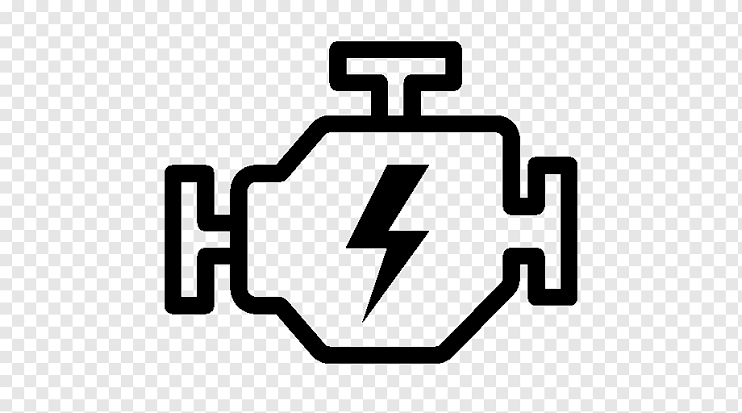

Honda City
| PETROL & Diesel | |
|---|---|
| Engine | 1498 cc |
| 17.8 to 24.1 kmpl | |
| 5 Seater | |
| Price | ₹ 13.23 Lakh onwards |
| Transmission | Manual & Automatic (CVT) |
The All New City is an aspirational sedan in its segment and continues to take the fight to similarly-priced SUVs like the Kia Seltos and Hyundai Creta. The new-gen model is sportier-looking, spacious, offers more features and feels premium than the fourth-gen City, which will continue to be sold alongside this. It is also quite exciting to drive.
With an all-new design, updated platform and reworked mechanicals, this is the fifth-generation Honda City, due for launch in July. Now, the City has a strong brand recall in India, and in essence, it is the product that shaped Honda’s fortunes in the country. So much so, that it has continued its dominance in the mid-size sedan segment since its introduction, and even manages to take the fight to the likes of the Hyundai Creta and the Kia Seltos. And to appeal to a wide spectrum of buyers, the All New City will be sold alongside the current-generation model.